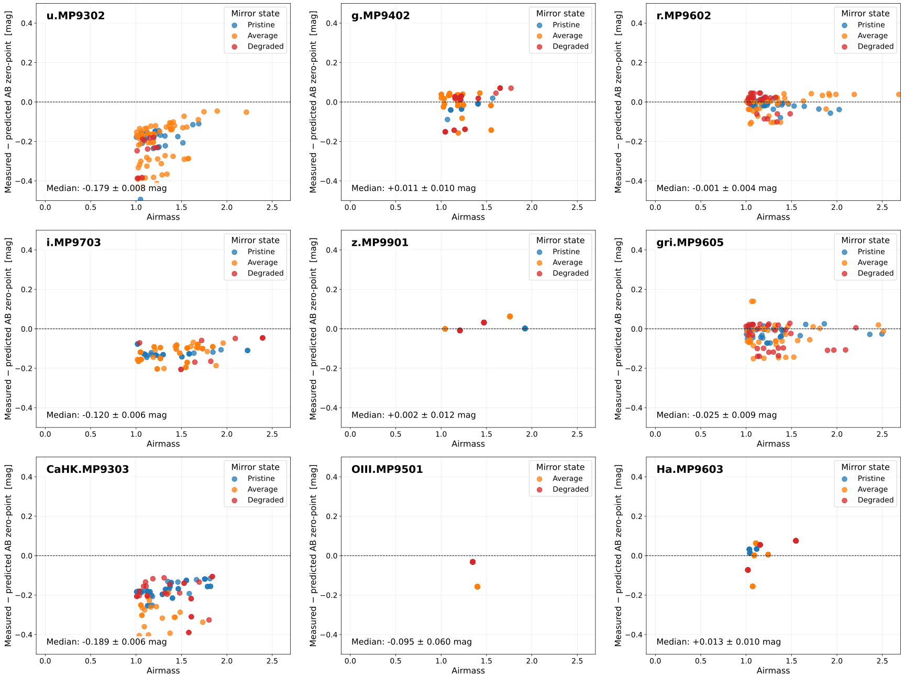
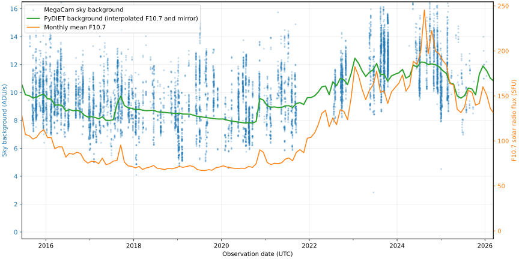
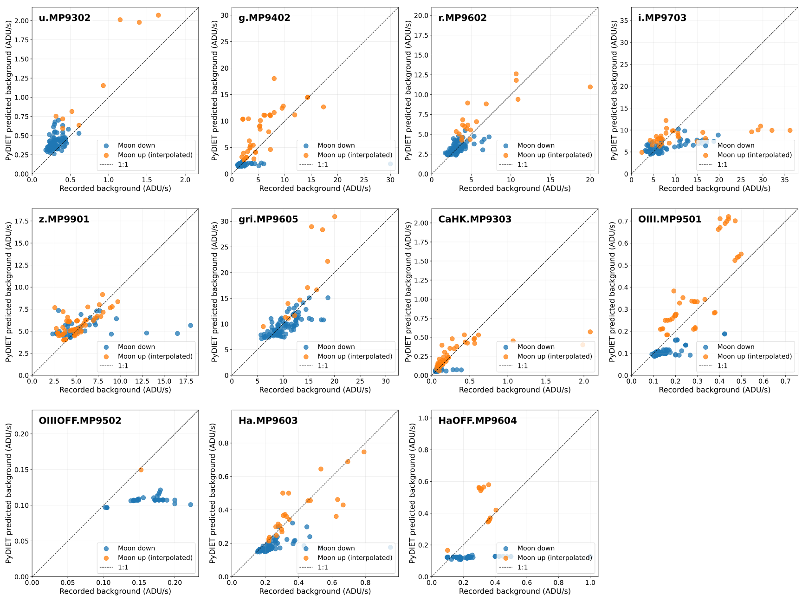
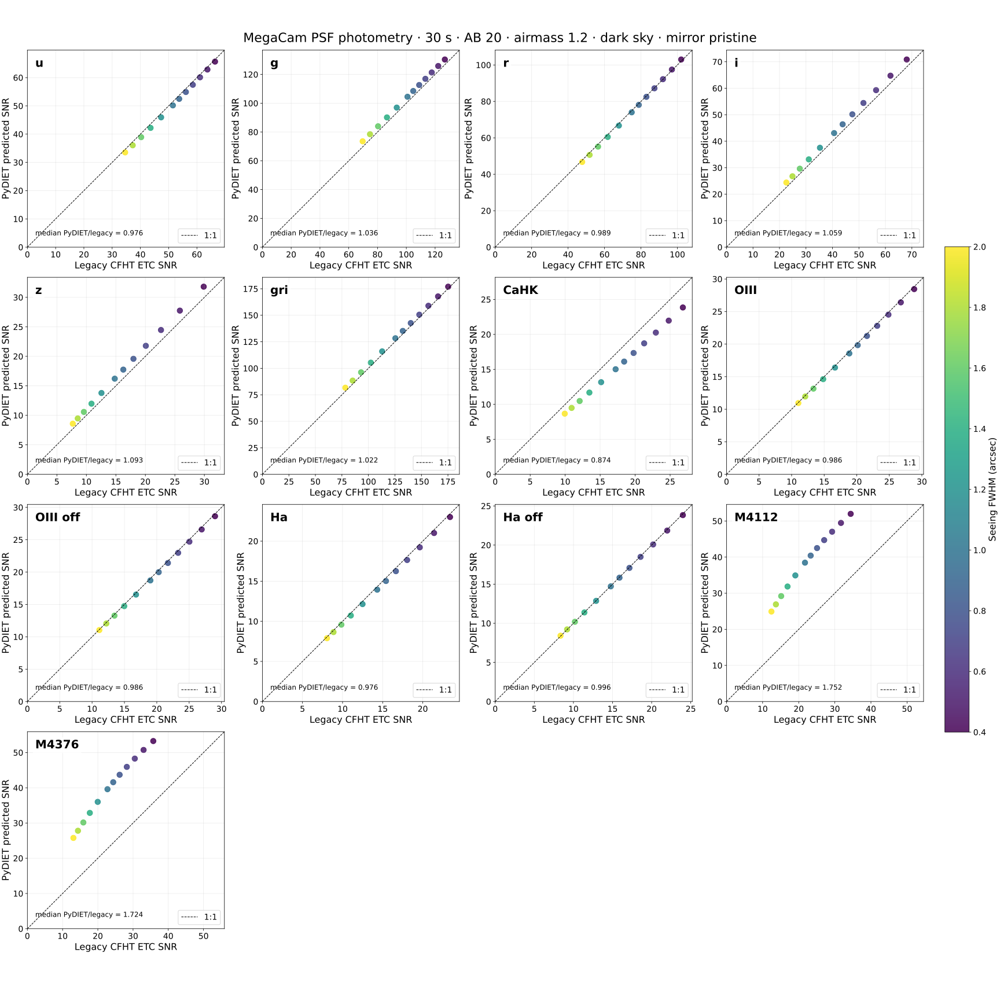

Model validation
Comparisons with independent measurements help assess how well the ETC model represents real observations. For a meaningful comparison, match the filter, exposure time, observing conditions, and instrument configuration. This chapter checks PyDIET's predictions against science and calibration exposures and the legacy CFHT calculator.
Photometric zero-point
The photometric zero-point relates a source's magnitude to the signal recorded by the instrument in a one-second exposure. A higher zero-point corresponds to greater sensitivity: a source of fixed magnitude produces more detected signal and consequently reaches a higher SNR, all else being equal. Changes in atmospheric transparency and instrumental throughput can therefore appear as changes in the measured zero-point.

The Elixir pipeline [11] derives nightly MegaCam magnitude zero-points from photometric exposures by comparing measured count rates for suitable stars (SNLS tertiary standards [12, 13]) with calibrated catalog magnitudes. After applying the same photometric conventions and selecting observations of appropriate quality, these values can be compared against PyDIET predictions for the matching filter, airmass, and instrumental state.
Fig. 10 shows this comparison as a function of airmass for MegaCam observations from 2015 to 2025. For filters with sufficient coverage, agreement is typically within 1–2% across the sampled airmasses. The main exceptions are u, CaHK, and i, for which PyDIET appears to overestimate instrumental throughput by about 10–20%. The reason for this discrepancy remains unclear. The CFHT data configuration therefore includes an empirical photometric correction based on the observed median offset in each affected filter.

Fig. 10 Difference between the AB magnitude zero-points measured by the Elixir pipeline and the PyDIET predictions as a function of airmass, for various filters of the MegaCam instrument. Each point represents a photometric night. Color indicates mirror condition: blue for pristine, orange for average, and red for degraded. The median difference and its uncertainty are shown in the lower left of each plot.
Sky background
The sky background contributes photon noise to an observation and therefore limits the SNR, especially for faint sources. A brighter sky produces more noise and lowers the SNR for otherwise identical observations. Its level depends on the filter, airmass, lunar illumination, solar activity, and changes in instrumental throughput over time.
The background rate can be measured in reduced exposures from source-free pixels or source-masked regions, after accounting for detector signatures and the exposure time. These measurements can then be compared with PyDIET predictions evaluated for the observing conditions recorded for each exposure.
Changes over time
Solar activity and mirror degradation drive changes in sky background rates from one observing run to the next. Monthly mean solar radio fluxes from solar activity records and mirror recoating logs let us select the corresponding PyDIET settings and compare predictions with individual exposures. The observed variations agree well with the model (Fig. 11).

Fig. 11 Measured sky background rate in the MegaCam gri filter (in ADU/s) as a function of time (blue points), compared to the monthly average solar activity (orange line) and the PyDIET prediction (green line). Only photometric exposures taken on dark nights at airmass < 1.4 are included. The PyDIET model assumes an airmass of 1.2 and accounts for interpolated solar activity and mirror ageing.
Differences between filters
The Elixir pipeline also tracks the sky background in all exposures using empirical estimates from SExtractor [14].

Fig. 12 PyDIET predictions versus measured sky background count rates (in ADU/s). The u, CaHK, and i zero-point offsets are corrected as described above. Each point represents a photometric night. Color indicates lunar conditions: blue when the Moon is below the horizon, orange when it is above.
Signal-to-noise ratio
The achieved SNR reflects both sides of the comparison: the zero-point sets the detected source signal, while the sky background contributes to its noise. It also depends on the source brightness, exposure time, image quality, detector noise, and the method used to measure the source flux.
No independent SNR measurements are readily available for comparison with PyDIET. We can, however, compare its predictions with those of the legacy DIET ETC over a range of seeing values. Fig. 13 shows this comparison for all currently available MegaCam filters.

Fig. 13 PyDIET versus legacy DIET predictions for point-source SNR using PSF photometry, a 30 s exposure, and seeing from 0.4 to 2 arcsec.
Both calculators use AB magnitude 20, airmass 1.2, dark sky, and transparency 1.
PyDIET uses pristine mirrors and average solar activity; the legacy calculator has no corresponding controls.
The predictions generally agree to within 10%. The largest discrepancies occur in CaHK and the DESI filters, M4112 and M4376. The DESI-filter predictions have not yet been checked against observations.